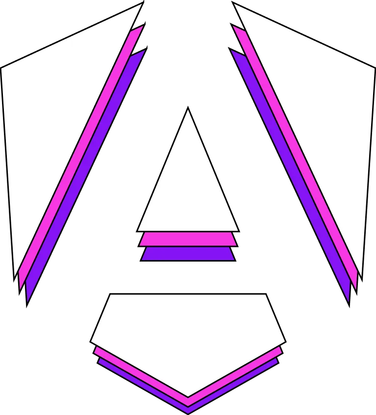

<div id="main-layout">
  <mat-toolbar color="primary">
    <mat-toolbar-row>
      
      <!-- Add your logo if available-->
      <mat-icon (click)="sidenav.toggle()">menu</mat-icon>
    </mat-toolbar-row>
  </mat-toolbar>
  <mat-sidenav-container id="sidenav-container">
    <mat-sidenav id="sidenav" #sidenav mode="side" [(opened)]="opened">
      <mat-nav-list id="navlist">
        <a
          mat-list-item
          [routerLink]="'/'"
          routerLinkActive="active"
          (click)="sidenav.close()"
          >Home</a
        >
        <a
          mat-list-item
          [routerLink]="'/chapter3'"
          routerLinkActive="active"
          (click)="sidenav.close()"
          >Chapter3</a
        >
      </mat-nav-list>
    </mat-sidenav>
    <mat-sidenav-content>
      <router-outlet></router-outlet>
    </mat-sidenav-content>
  </mat-sidenav-container>
</div>
